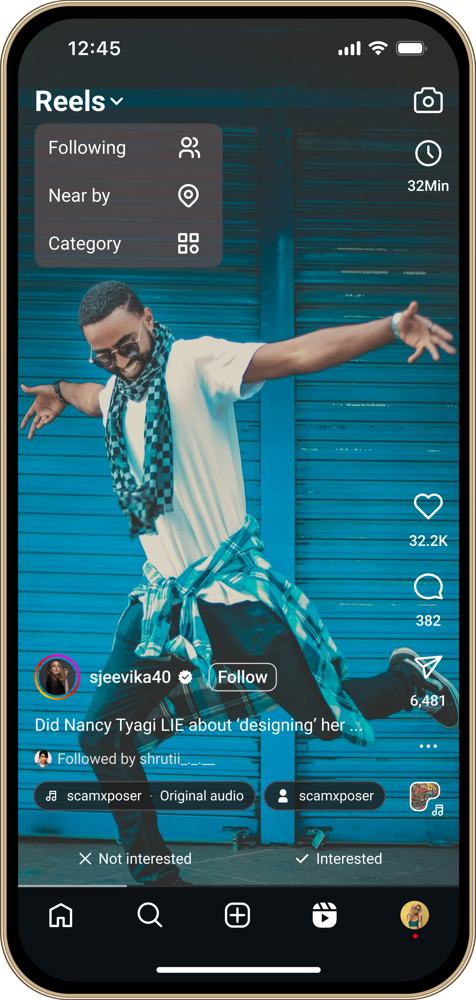
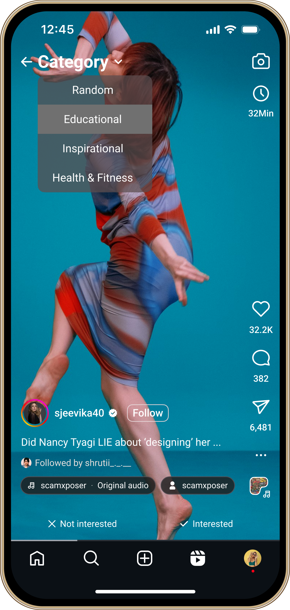
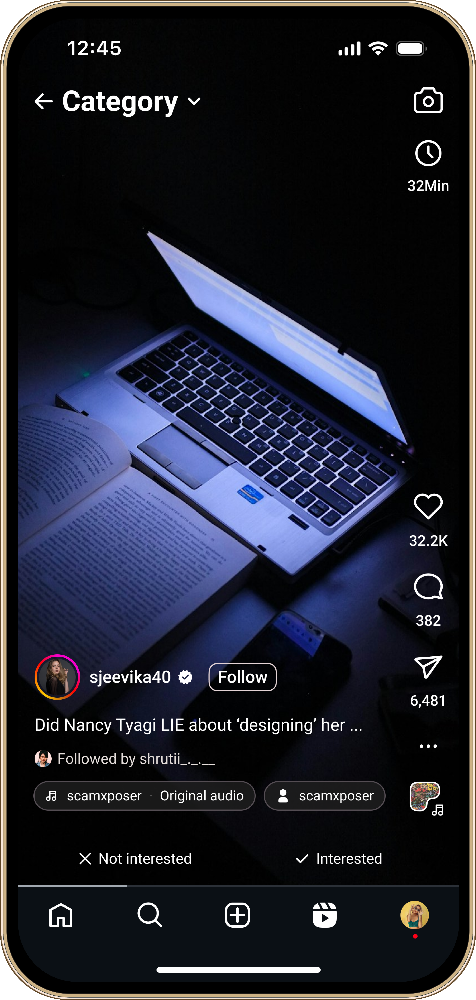
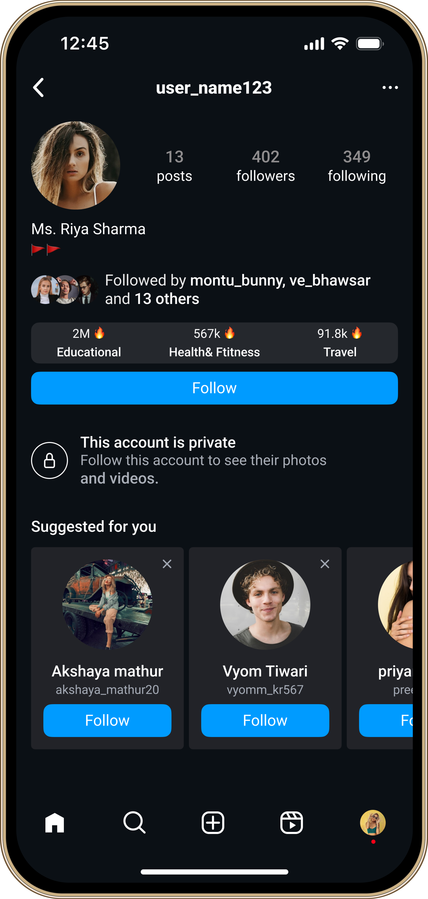
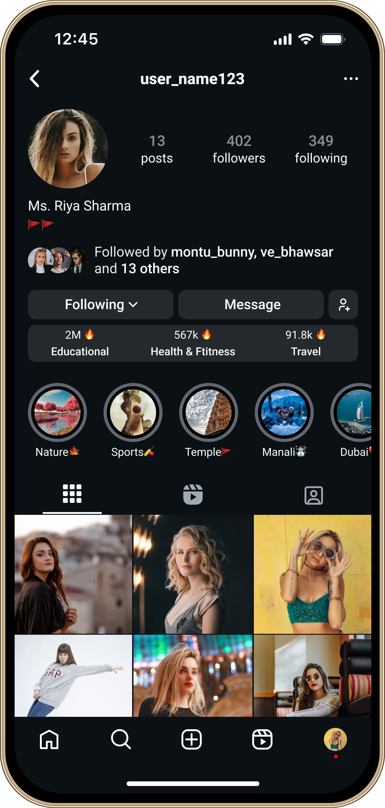
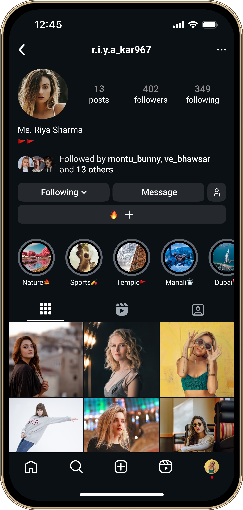
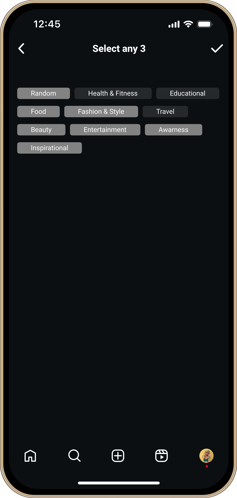

Problem Statement
- Instagram Reels are super engaging — maybe too engaging. The endless scroll and constantly personalized videos make it really easy to lose track of time. A lot of people end up watching for way longer than they planned, which can mess with their sleep, focus, and overall mental health.
- The challenge is to come up with design ideas that help people use Reels more mindfully — without completely hurting Instagram’s business, which relies on people watching, sharing, and engaging with content regularly.
Solution
- Introduce a real-time usage timer in the Reels section to help users track how much time they spend watching Reels each day, with the timer resetting every 24 hours. Additionally, implement a Reels category filter to allow users to view content based on their selected interests, promoting more intentional and focused browsing.
- Applying a streak rule based on the watching time of Reels by category is a powerful way to increase user engagement and retention.
- streak 1 is given for >=5 Minutes in 24 hours
- Encourage users to continuously watch Reels from specific categories for a set duration per day, building habits and improving time spent on the platform.
Unique Screens (Mock Up)

Timer

Category

Scrolling Category


Streak on Profile

Streak on Profile

Add Streak Categories

Category Selection